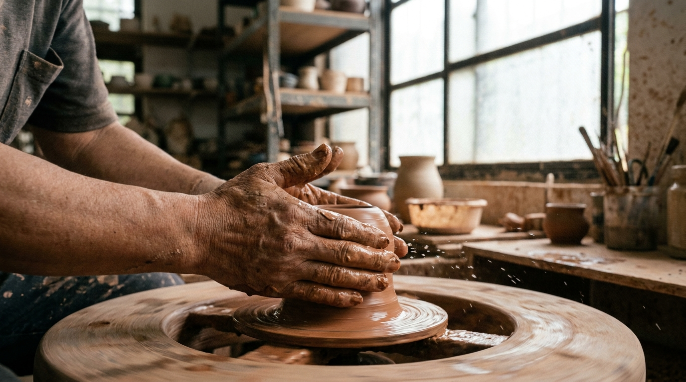
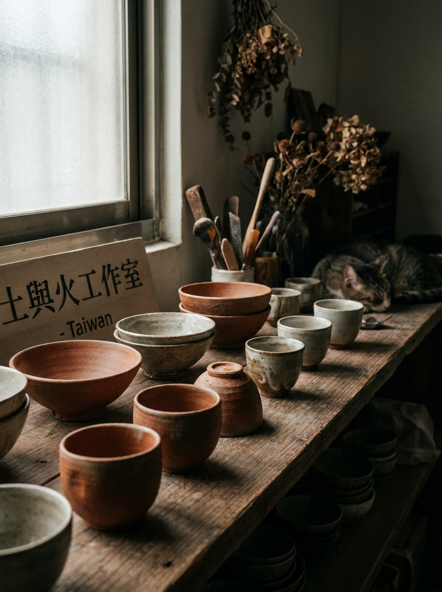

土形工作室相信，每一件陶器的形狀，都是創作者與土之間的對話結果。我們以手拉坯的方式，讓每一件作品都保留那個當下的溫度與猶豫。
探索作品 體驗課程
陶藝是世界上最古老的手工藝之一，但它從來不只是技術的展示。每一個拉坯的動作，都需要手、土、水和力道之間精細的溝通。稍一分心，形狀就走了。
土形創立於2016年，在台北三峽的老礦場改建的空間裡，我們用當地的紅土與苗栗的陶土混合，燒製出帶有這片土地色澤的器物。每一件作品，都是台灣的。

為日常使用設計的器皿系列，厚實的器壁保溫良好，微溫的赭石釉面，讓每一頓飯都多了一份手感溫度。
專為台灣烏龍茶、普洱茶設計的茶器組。以低溫素燒後二次上釉，保留陶土的透氣性，讓茶湯更柔和圓潤。
與台灣花藝師合作設計，兼顧當代台灣花藝的用器習慣——細高頸適合台灣野花，低扁口適合山採草葉。
不需要任何陶藝經驗，只需要願意靜下來、感受土在手中的重量。每堂課最多8人，由老師一對一指導。
適合完全沒有陶藝經驗的朋友。從最基本的揉土開始，以手捏成形法（Pinching）製作一個小碗或杯子，不使用拉坯輪，完全感受土的溫度。
使用電動拉坯輪，從開土、定中心、開口到拉高，完整體驗手拉坯的基本流程，製作一個小杯或小碗。是土形最受歡迎的課程，需提前一週預約。
8堂制長期課程，涵蓋手捏、盤築、拉坯、修坯、上釉到窯燒全流程。結業時帶走自己從零製作的完整器皿組，並收到老師手寫的學習紀錄。
提供企業團建、生日包場、婚禮前置活動等定制課程。可包場4至20人，提供酒水、音樂設備，讓同事或朋友在揉土與笑聲中，做出屬於這段關係的一件器物。
依據作品用途，選取台北三峽紅土、苗栗陶土或進口陶土，以手揉去除氣泡，調整含水量，是決定作品質感的第一關。
電動拉坯輪以穩定轉速輔助，創作者以手掌的位置與力道，引導土往上拉高、往外擴張，在幾秒至幾分鐘內決定器形的骨架。
拉好的器形需自然晾至半乾（革質狀態），再翻面以修坯刀修整器底、刮薄器壁，精修足圈，讓重量與厚度達到設計比例。
完全乾燥後，入窯以850度素燒，燒去水分與有機物，讓陶土轉化為多孔質的素坯（bisqueware），為上釉做準備，同時確認器形不崩裂。
土形以自調的石灰基礎釉為主，加入金屬氧化物調色——氧化鐵出赭棕、氧化銅出青綠、氧化鈷出深藍。浸釉、刷釉、噴釉技法混用。
以1230度高溫釉燒12至16小時，窯內氣氛、溫差、坯件位置，都會影響最終釉色。每一件燒出來的作品，都是唯一的——這是土形最珍視的事。
在師大美術系學了繪畫，卻在27歲那年第一次摸到陶土時，決定轉換人生方向。赴日研習窯燒三年，師從岐阜縣著名的柴燒陶藝家，回台後在三峽老礦場找到了土形的家。
陳若文的作品不追求完美的對稱，反而刻意保留拉坯時的手指痕跡、修坯時的刀刮紋路——那些痕跡，是作品呼吸的方式，也是她和每件土坯共同書寫的日記。